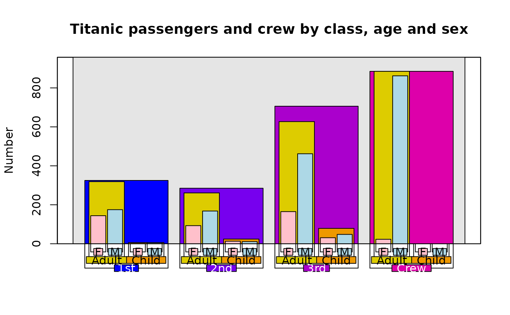
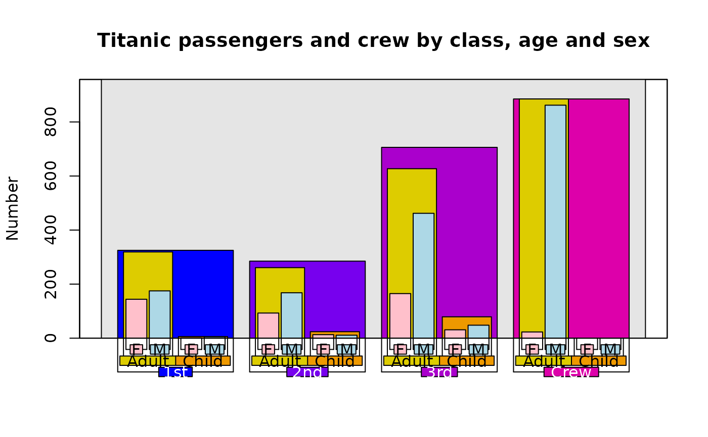
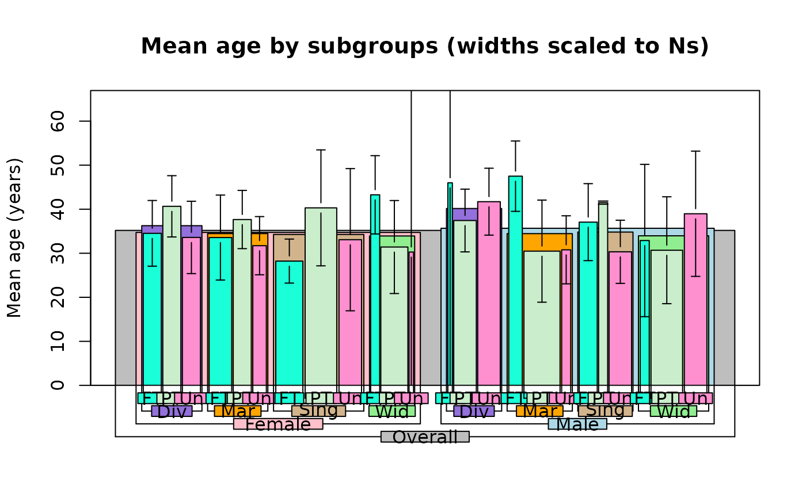
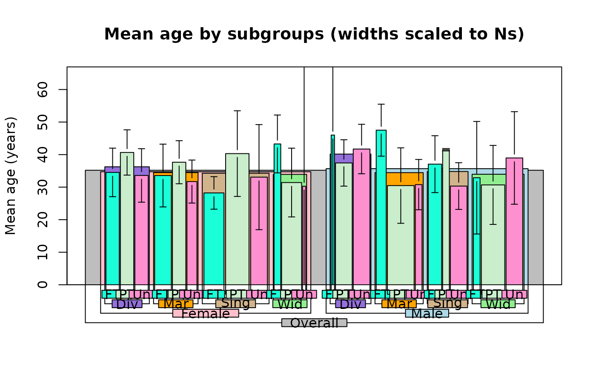

Display a nested breakdown of numeric values
barNest.RdBreaks down the elements of a data frame by one or more categorical elements and displays the breakdown as a bar plot.
Usage
barNest(formula=NULL,data=NULL,FUN=c("mean","sd","sd","valid.n"),ylim=NULL,
main="",xlab="",ylab="",shrink=0.1,errbars=FALSE,col=NA,
labelcex=1,lineht=NULL,showall=TRUE,Nwidths=FALSE,barlabels=NULL,
showlabels=TRUE,mar=NULL,arrow.cap=NULL,trueval=TRUE)Arguments
- formula
A formula with a numeric element of a data frame on the left and one or more categorical elements on the right.
- data
A data frame containing the elements in formula.
- FUN
The functions to apply to x.
- ylim
Optional y limits for the plot, usually necessary for counts.
- main
Title for the plot.
- xlab,ylab
Axis labels for the plot. The x axis label is typically blank
- shrink
The proportion to shrink the width of the bars at each level.
- errbars
Whether to display error bars on the lowest level of breakdown.
- col
The colors to use to fill the bars. See Details.
- labelcex
Character size for the group labels.
- lineht
The height of a line of text in the lower margin of the plot in user units. This will be calculated by the function if a value is not passed.
- showall
Whether to display bars for the entire breakdown.
- Nwidths
Whether to scale the widths of the bars to the number of observations.
- barlabels
Optional group labels that may be useful if the factors used to break down the numeric variable are fairly long strings.
- showlabels
Whether to display the labels below the bars.
- mar
If not NULL, a four element vector to set the plot margins. If new margins are set, the user must reset the margins after the function exits.
- arrow.cap
The width of the "cap" on error bars in user units, calculated on the basis of the number of bars in the final breakdown if NA.
- trueval
If this is not NA, the call to brkdnNest will return the proportions of the response variable that are equal to trueval. See Details.
Details
barNest displays a bar plot illustrating the hierarchic breakdown of the elements of a data frame. The breakdown is performed by brkdnNest and the actual display is performed by drawNestedBars. The heights of the bars will be proportional to the values returned by the first function in FUN. If showall is TRUE, the entire nested breakdown will be displayed. This can be useful in visualizing the relationship between groups and subgroups in a compact format.
barNest assumes that there will be four breakdowns in the list returned by brkdnNest in the order summary measure, upper dispersion value, lower dispersion value and number of valid observations. If Nwidths=FALSE, it may work with only three and if errbars=FALSE as well, it may work with only one.
If Nwidths=TRUE, the bar widths will be scaled to the relative number of observations per group. When the numbers of observations are very different, the labels for those bars with small numbers of observations will probably overlap.
A number of functions can be passed in the FUN argument. Three functions, propbrk, sumbrk and valid.n will work as summary measures, giving proportions or sums of particular values of a discrete variable and counts in each group and subgroup respectively. Binomial confidence limits can be added to the proportions returned by propbrk with binciWl and binciWu as in the second last example. If valid.n is the first element of FUN, the "overall" bar and label will be suppressed, as they are not informative. It is up to the user to decide whether any "error bars" displayed are meaningful.
The colors of the bars are determined by col. If showall is FALSE, the user only need pass a vector of colors, usually the same length as the number of categories in the final (last on the right side) element in the formula. If showall is TRUE and the user wants to color all of the bars, a list with as many elements as there are levels in the breakdown should be passed. Each element should be a vector of colors, again usually the same length as the number of categories. As the categorical variables are likely to be factors, it is important to remember that the colors must be in the correct order for the levels of the factors. When the levels are not in the default alphanumeric order, it is quite easy to get this wrong. As a barNest plot with more than a few factors and levels in each factor is quite dense, easily distinguished colors for each level of the breakdown may be preferable. As with some other plots, trying to cram too much information into a single illustration may not work well.
References
Lemon, J. & Levy, O. (2011) barNest: Illustrating nested summary measures. Statistical Computing and Graphics Newsletter of the American Statistical Association, 21(2): 5-10.
See also
brkdnNest, drawNestedBars, superbarplot(UsingR)
Examples
# recreate the Titanic data frame and show the three way breakdown
titanic<-data.frame(
class=c(rep("1st",325),rep("2nd",285),rep("3rd",706),rep("Crew",885)),
age=c(rep("Adult",319),rep("Child",6),rep("Adult",261),rep("Child",24),
rep("Adult",627),rep("Child",79),rep("Adult",885)),
sex=c(rep("M",175),rep("F",144),rep("M",5),rep("F",1),
rep("M",168),rep("F",93),rep("M",11),rep("F",13),
rep("M",462),rep("F",165),rep("M",48),rep("F",31),
rep("M",862),rep("F",23)),
survived=c(rep("Yes",57),rep("No",118),rep("Yes",140),rep("No",4),rep("Yes",6),
rep("Yes",14),rep("No",154),rep("Yes",80),rep("No",13),rep("Yes",24),
rep("Yes",75),rep("No",387),rep("Yes",76),rep("No",89),
rep("Yes",13),rep("No",35),rep("Yes",14),rep("No",17),
rep("Yes",192),rep("No",670),rep("Yes",20),rep("No",3)))
require(plotrix)
titanic.colors<-list("gray90",c("#0000ff","#7700ee","#aa00cc","#dd00aa"),
c("#ddcc00","#ee9900"),c("pink","lightblue"))
barNest(survived~class+age+sex,titanic,col=titanic.colors,showall=TRUE,
main="Titanic survival by class, age and sex",ylab="Proportion surviving",
FUN=c("propbrk","binciWu","binciWl","valid.n"),shrink=0.15,trueval="Yes")
 barNest(survived~class+age+sex,titanic,col=titanic.colors,showall=TRUE,
main="Titanic survival by class, age and sex (scaled bar widths)",
ylab="Proportion surviving",FUN=c("propbrk","binciWu","binciWl","valid.n"),
shrink=0.15,trueval="Yes",Nwidths=TRUE)
barNest(survived~class+age+sex,titanic,col=titanic.colors,showall=TRUE,
main="Titanic survival by class, age and sex (scaled bar widths)",
ylab="Proportion surviving",FUN=c("propbrk","binciWu","binciWl","valid.n"),
shrink=0.15,trueval="Yes",Nwidths=TRUE)
 # now show the actual numbers of passengers
barNest(survived~class+age+sex,titanic,col=titanic.colors,showall=TRUE,
main="Titanic passengers and crew by class, age and sex",
ylab="Number",FUN="valid.n",shrink=0.15)

# to see this properly displayed, start a wide plot window
# x11(width=10)
test.df<-data.frame(Age=rnorm(100,35,10),
Sex=sample(c("Male","Female"),100,TRUE),
Marital=sample(c("Div","Mar","Sing","Wid"),100,TRUE),
Employ=sample(c("FT","PT","Un"),100,TRUE))
test.col<-list(Overall="gray",Sex=c("pink","lightblue"),
Marital=c("mediumpurple","orange","tan","lightgreen"),
Employ=c("#1affd8","#caeecc","#ff90d0"))
barNest(formula=Age~Sex+Marital+Employ,data=test.df,ylab="Mean age (years)",
main="Mean age by subgroups",errbars=TRUE,col=test.col)
# now show the actual numbers of passengers
barNest(survived~class+age+sex,titanic,col=titanic.colors,showall=TRUE,
main="Titanic passengers and crew by class, age and sex",
ylab="Number",FUN="valid.n",shrink=0.15)

# to see this properly displayed, start a wide plot window
# x11(width=10)
test.df<-data.frame(Age=rnorm(100,35,10),
Sex=sample(c("Male","Female"),100,TRUE),
Marital=sample(c("Div","Mar","Sing","Wid"),100,TRUE),
Employ=sample(c("FT","PT","Un"),100,TRUE))
test.col<-list(Overall="gray",Sex=c("pink","lightblue"),
Marital=c("mediumpurple","orange","tan","lightgreen"),
Employ=c("#1affd8","#caeecc","#ff90d0"))
barNest(formula=Age~Sex+Marital+Employ,data=test.df,ylab="Mean age (years)",
main="Mean age by subgroups",errbars=TRUE,col=test.col)
 barNest(formula=Age~Sex+Marital+Employ,data=test.df,ylab="Mean age (years)",
main="Mean age by subgroups (widths scaled to Ns)",errbars=TRUE,col=test.col,
Nwidths=TRUE)

# set up functions for 20th and 80th percentiles
q20<-function(x,na.rm=TRUE) return(quantile(x,probs=0.2,na.rm=TRUE))
q80<-function(x,na.rm=TRUE) return(quantile(x,probs=0.8,na.rm=TRUE))
# show the asymmetric dispersion measures
barNest(formula=Age~Sex+Marital+Employ,data=test.df,ylab="Mean age (years)",
main="Use median and quantiles for dispersion",
FUN=c("median","q80","q20","valid.n"),
errbars=TRUE,col=test.col)
#> Error in q80(c(30.2729751788185, 42.0875306053113, 19.7104128534038, 37.374253451732, 21.871857535292, 42.4702858708636, 19.3748156535415, 35.7105335956778, 28.6046522979303, 26.5480426144814, 41.7524469808172, 46.5337579392521, 18.134952575578, 25.9718505077993, 48.1763369782387, 46.0018974454478, 47.0376783938691, 20.6872922311001, 48.8291086057034, 35.0312594041218, 34.2211317561242, 39.4142822592846, 36.2892289622369, 26.6978573963638, 29.9640709028839, 23.0635881799008, 27.4827667710908, 49.5584140300823, 26.713964672107, 37.8977446037578, 30.1994651572887, 28.9517064578479, 49.6011018039623, 36.496793540957, 20.666788997018, 34.8969668137141, 32.8776396516206, 25.9365982143577, 13.9784752110473, 53.93360463671, 25.3187416297593, 33.9739696362312, 37.3995957212182, 35.6089889324996, 13.2242397172451, 33.821398567506, 36.1229478740626, 35.0788619766754, 53.7774387154249, 56.5875655364964, 42.0971452224005, 42.6698337875431, 31.9178857917449, 45.1200184856141, 25.8094840306469, 40.6338007724989, 38.224827493153, 38.666743632573, 46.2983515341746, 25.5850192406856, 37.1783764294473, 49.154122930517, 31.1626695207393, 33.2591362641221, 32.7825548286618, 24.9047127751742, 39.8072526626885, 51.0440732826108, 19.8497547117929, 20.8397608550649, 43.7677732655608, 41.2413241262139, 56.1227728781614, 31.4387558427738, 24.3553579134843, 45.7711653845397, 46.8157556654405, 36.9839209464341, 30.9959475059186, 41.1615428073265, 54.7415674798341, 53.8466232423526, 19.1137945340634, 29.6007683588956, 23.3053853634955, 40.5910598857455, 16.8065275338205, 38.9334397239581, 35.4213410586766, 46.7966417694769, 32.4307882381581, 24.4366390219833, 36.9877720512642, 41.5053355166639, 38.4391333708039, 49.7753231212208, 35.7202569848562, 56.2644453405315, 20.2380309433499, 39.0788849977307), na.rm = TRUE): could not find function "q80"
barNest(formula=Employ~Sex+Marital,data=test.df,ylab="Proportion unemployed",
main="Proportion unemployed by sex and marital status",
FUN=c("propbrk","binciWu","binciWl","valid.n"),
errbars=TRUE,col=test.col,trueval="Un")
barNest(formula=Age~Sex+Marital+Employ,data=test.df,ylab="Mean age (years)",
main="Mean age by subgroups (widths scaled to Ns)",errbars=TRUE,col=test.col,
Nwidths=TRUE)

# set up functions for 20th and 80th percentiles
q20<-function(x,na.rm=TRUE) return(quantile(x,probs=0.2,na.rm=TRUE))
q80<-function(x,na.rm=TRUE) return(quantile(x,probs=0.8,na.rm=TRUE))
# show the asymmetric dispersion measures
barNest(formula=Age~Sex+Marital+Employ,data=test.df,ylab="Mean age (years)",
main="Use median and quantiles for dispersion",
FUN=c("median","q80","q20","valid.n"),
errbars=TRUE,col=test.col)
#> Error in q80(c(30.2729751788185, 42.0875306053113, 19.7104128534038, 37.374253451732, 21.871857535292, 42.4702858708636, 19.3748156535415, 35.7105335956778, 28.6046522979303, 26.5480426144814, 41.7524469808172, 46.5337579392521, 18.134952575578, 25.9718505077993, 48.1763369782387, 46.0018974454478, 47.0376783938691, 20.6872922311001, 48.8291086057034, 35.0312594041218, 34.2211317561242, 39.4142822592846, 36.2892289622369, 26.6978573963638, 29.9640709028839, 23.0635881799008, 27.4827667710908, 49.5584140300823, 26.713964672107, 37.8977446037578, 30.1994651572887, 28.9517064578479, 49.6011018039623, 36.496793540957, 20.666788997018, 34.8969668137141, 32.8776396516206, 25.9365982143577, 13.9784752110473, 53.93360463671, 25.3187416297593, 33.9739696362312, 37.3995957212182, 35.6089889324996, 13.2242397172451, 33.821398567506, 36.1229478740626, 35.0788619766754, 53.7774387154249, 56.5875655364964, 42.0971452224005, 42.6698337875431, 31.9178857917449, 45.1200184856141, 25.8094840306469, 40.6338007724989, 38.224827493153, 38.666743632573, 46.2983515341746, 25.5850192406856, 37.1783764294473, 49.154122930517, 31.1626695207393, 33.2591362641221, 32.7825548286618, 24.9047127751742, 39.8072526626885, 51.0440732826108, 19.8497547117929, 20.8397608550649, 43.7677732655608, 41.2413241262139, 56.1227728781614, 31.4387558427738, 24.3553579134843, 45.7711653845397, 46.8157556654405, 36.9839209464341, 30.9959475059186, 41.1615428073265, 54.7415674798341, 53.8466232423526, 19.1137945340634, 29.6007683588956, 23.3053853634955, 40.5910598857455, 16.8065275338205, 38.9334397239581, 35.4213410586766, 46.7966417694769, 32.4307882381581, 24.4366390219833, 36.9877720512642, 41.5053355166639, 38.4391333708039, 49.7753231212208, 35.7202569848562, 56.2644453405315, 20.2380309433499, 39.0788849977307), na.rm = TRUE): could not find function "q80"
barNest(formula=Employ~Sex+Marital,data=test.df,ylab="Proportion unemployed",
main="Proportion unemployed by sex and marital status",
FUN=c("propbrk","binciWu","binciWl","valid.n"),
errbars=TRUE,col=test.col,trueval="Un")
 barNest(formula=Employ~Sex+Marital,data=test.df,ylab="Proportion unemployed",
main="Proportion unemployed by sex and marital status (scaled bar widths)",
FUN=c("propbrk","binciWu","binciWl","valid.n"),
errbars=TRUE,col=test.col,trueval="Un",Nwidths=TRUE)
barNest(formula=Employ~Sex+Marital,data=test.df,ylab="Proportion unemployed",
main="Proportion unemployed by sex and marital status (scaled bar widths)",
FUN=c("propbrk","binciWu","binciWl","valid.n"),
errbars=TRUE,col=test.col,trueval="Un",Nwidths=TRUE)
 barNest(formula=Age~Sex+Marital+Employ,data=test.df,ylab="Counts",
main="Show the counts in subgroups (final level only)",FUN="valid.n",
col=test.col,showall=FALSE,ylim=c(0,10))
barNest(formula=Age~Sex+Marital+Employ,data=test.df,ylab="Counts",
main="Show the counts in subgroups (final level only)",FUN="valid.n",
col=test.col,showall=FALSE,ylim=c(0,10))
 barNest(formula=Age~Sex+Marital+Employ,data=test.df,ylab="Counts",
main="Show all the counts in subgroups",FUN="valid.n",mar=c(5,5,4,2),
col=test.col)
barNest(formula=Age~Sex+Marital+Employ,data=test.df,ylab="Counts",
main="Show all the counts in subgroups",FUN="valid.n",mar=c(5,5,4,2),
col=test.col)